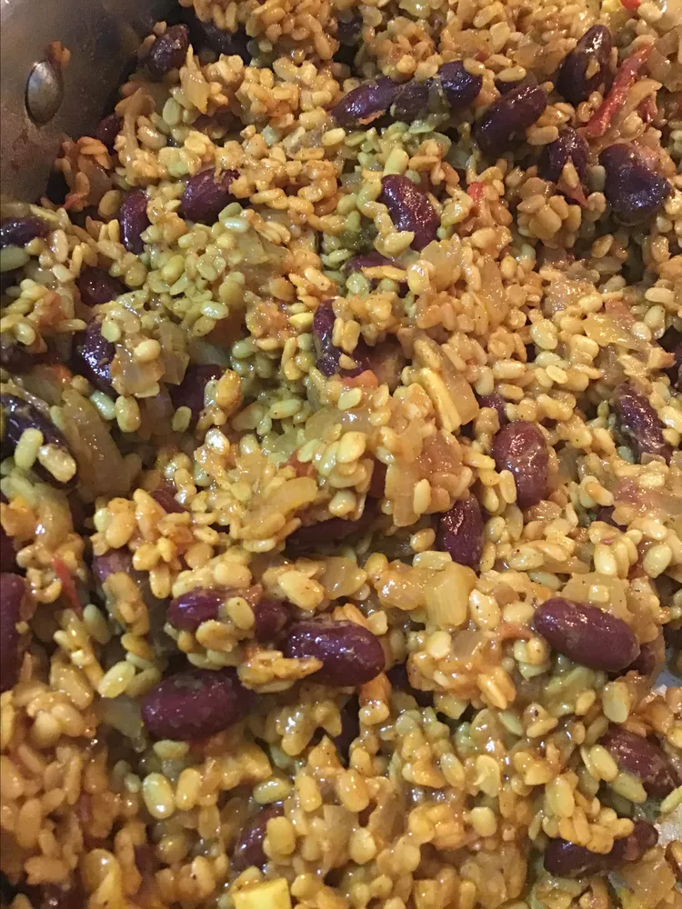

back to home
Urad Dal Recipe

Urad Dal Dish
Ingredients
- ¾ cup skinned split black lentils (urad dal)
- ¼ cup red kidney beans (rajma)
- 3 cups water, or more as needed
- 2 teaspoons salt, divided
- 1 teaspoon grated ginger, divided
- 1 teaspoon red chili powder, divided
- 3 tablespoons butter
- 2 tablespoons vegetable oil
- 1 teaspoon cumin seeds
- 2 bay leaves
- 2 whole cloves
- 1 onion, diced
- 1 green chili, chopped, or more to taste
- 1 tomato, diced
- 8 cloves garlic, crushed
- 1 tablespoon ground coriander
- ½ teaspoon ground turmeric
- 1 teaspoon lemon juice
- 1 teaspoon garam masala
- ½ cup heavy cream (Optional)
Steps
-
Combine black lentils and red kidney beans in a medium pot. Cover with water by 1-inch; let soak, 8 hours to overnight.
- Add 1 teaspoon salt, 1/2 teaspoon ginger, and 1/2 teaspoon chili powder to beans in the pot. Bring to a boil and cook until soft but not pasty, about 30 minutes.
- Meanwhile, heat butter and oil in a large saucepan. Add cumin seeds, bay leaves, and cloves; cook until sputtering, about 1 minute. Add onion, green chili, and remaining 1 teaspoon salt and remaining 1/2 teaspoon ginger; fry until golden brown, 5 to 10 minutes. Add tomato and garlic; cook until tomato is soft, about 5 minutes. Add coriander, turmeric, and remaining 1/2 teaspoon chili powder; fry until fragrant, about 30 seconds.
- Add bean-lentil mixture and lemon juice to spice mixture; mix gently. Stir in garam masala. Simmer dal over low heat for 15 minutes. Add cream and simmer until heated through, about 5 minutes.